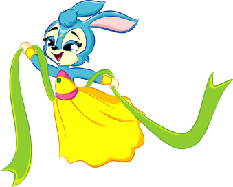

气质基准=她的全家福：机体 603 冰蓝白 / 冰魄剑 518 寒光 / 满蓄 ❄。裁决项：弹形（三棱冰锥+侧枝雪枝）、色（冰蓝→白芯）、霜雾尾迹、实际尺寸可读性。回复「通过」或报序号+方向。

| # | 部件 | 现设计 |
|---|---|---|
| 1 | 主弹体 | 三棱冰锥（尾粗头锐），冰蓝→白芯横向渐变 |
| 2 | 棱面折光 | 两条纵向高光棱线（晶体感来源） |
| 3 | 侧枝雪枝 | 三根短冰枝（雪花枝意象，上二下一） |
| 4 | 霜雾尾迹 | 三粒渐散雪晶+淡蓝雾线 |
| 5 | 寒光晕 | 冰蓝椭圆辉光（低透明度） |
页面：prototype/assets/lantu-preview.html · 通过后接线进游戏（jezd→icebolt）